Canning, dehydrating, freeze drying, fermenting, and long-term storage — every method, every processing time, cross-checked against USDA and NCHFP guidance.
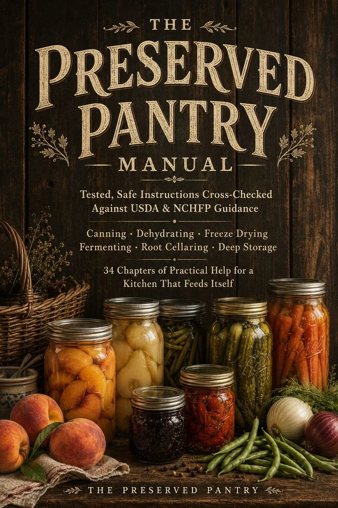
Every technique in this book is shown, not just described — the jam sheet test, the jerky bend test, a strawberry dried three different ways. If a page tells you what to look for, a photo shows you exactly that.
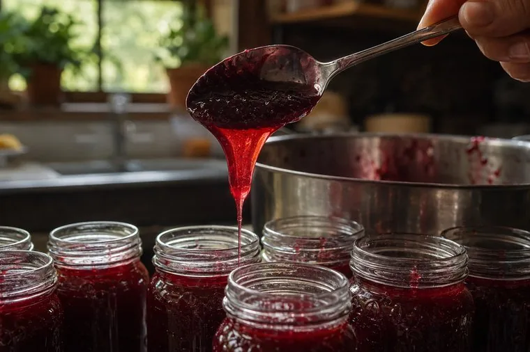
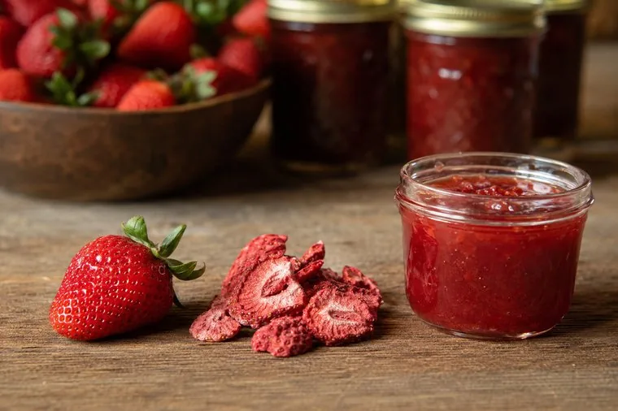
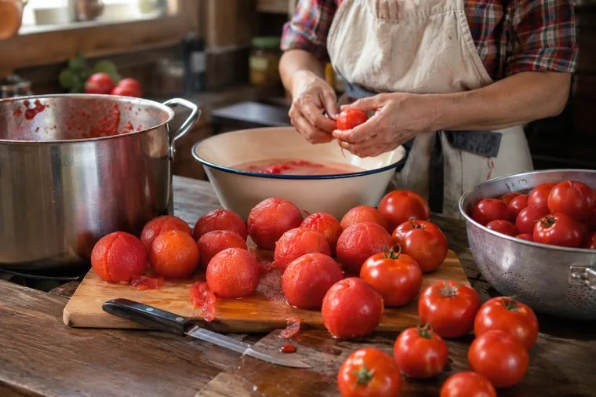
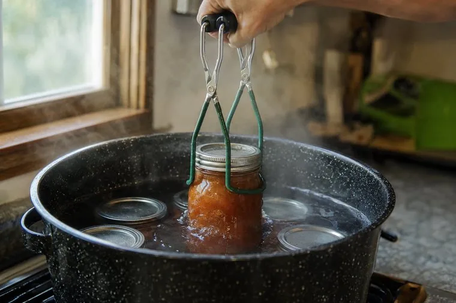
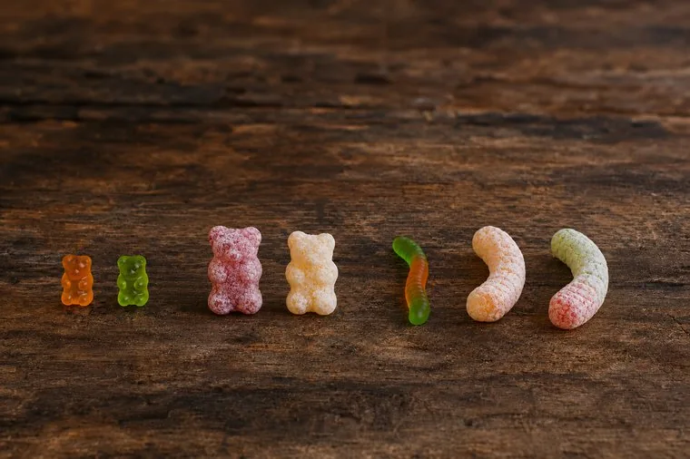
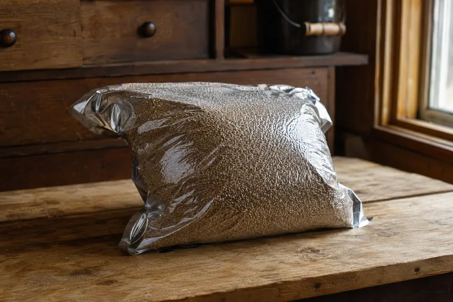
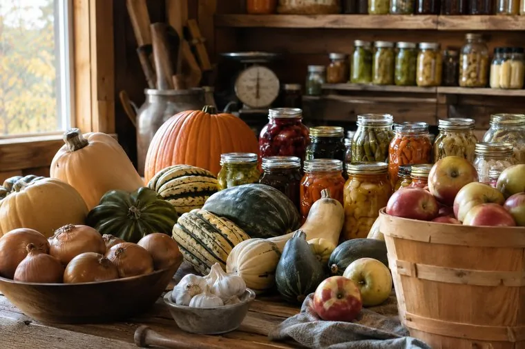
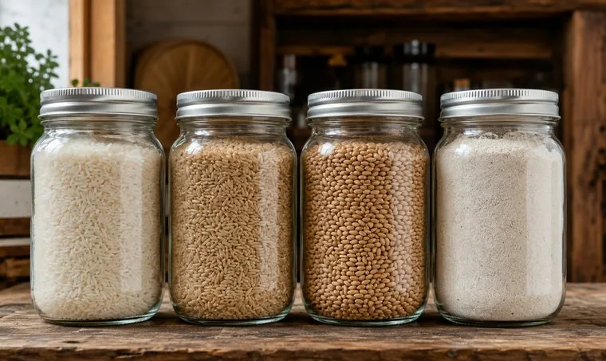
You won’t need a second book for the next method.
A manual tells you the processing time. A sheet on the cupboard door means you never have to go and look it up with wet hands and a canner already boiling. The complete Printable Companion Pack is bound into the back of the book — sized for US Letter, ready for a binder, a cupboard door, and a pencil.
Nothing extra to download, nothing to lose — it is part of the same file, at the back of the book.
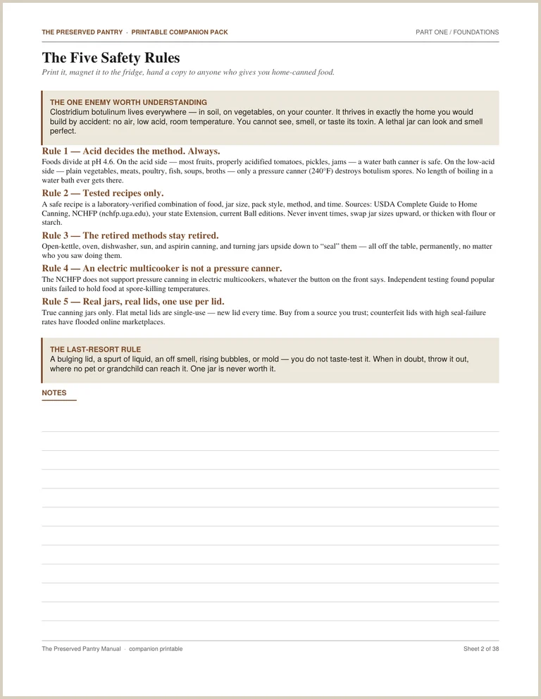
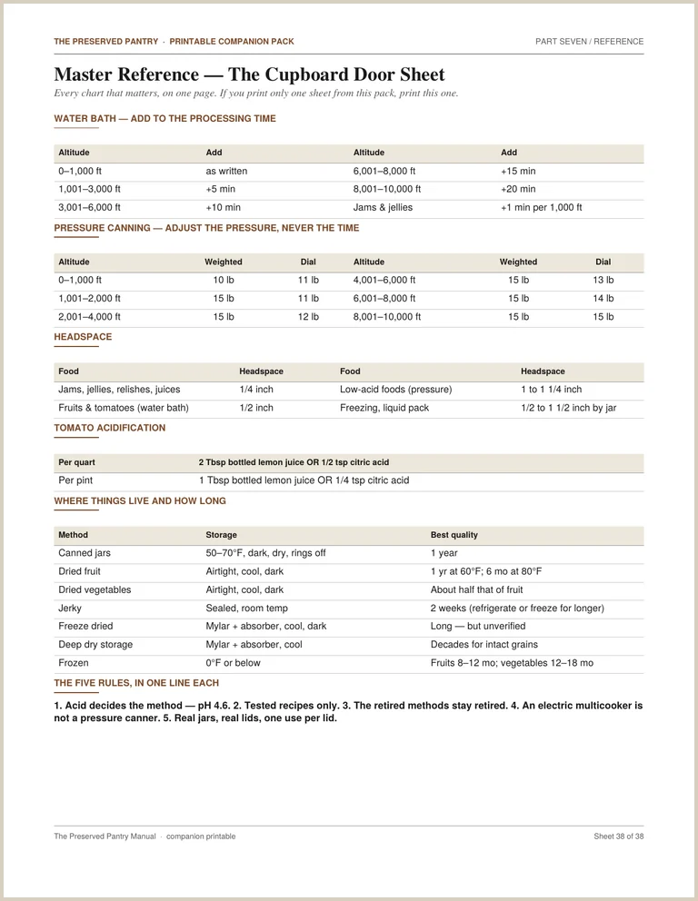
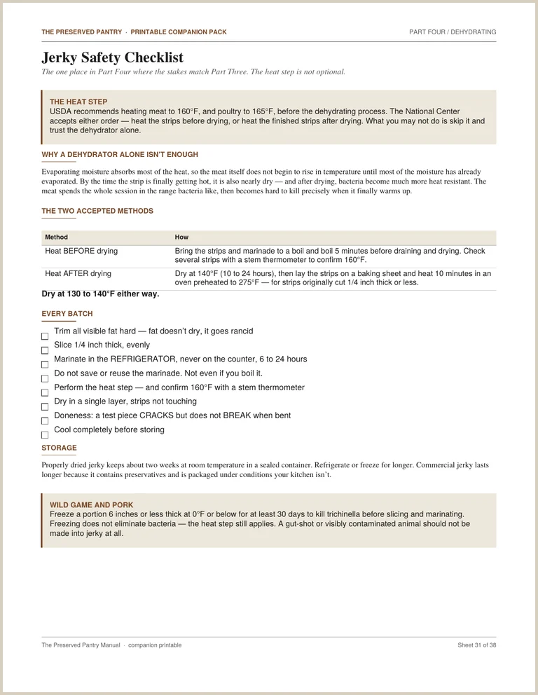
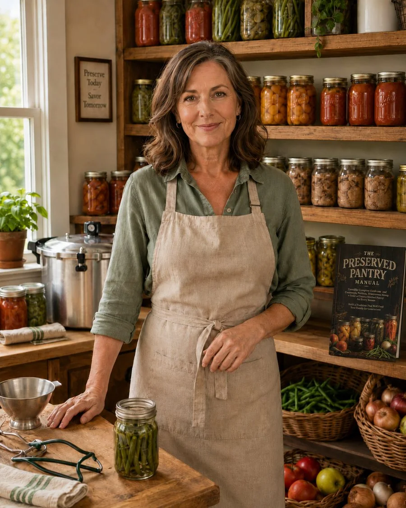
“Every processing time, every headspace measurement, every altitude adjustment in this book is cross-checked against USDA and NCHFP guidance — not scraped from a blog, not guessed by software.”
Most food preservation books today are one of two things: a decades-old reference that assumes you already know what a headspace is, or a cheaply produced modern guide padded with recipes nobody tested. This manual is neither — it's tested, sourced, and illustrated so you always know exactly what you're aiming for.
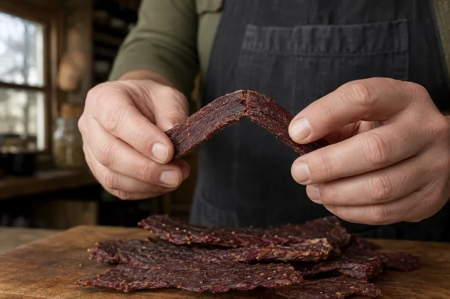
Photographs teach what words alone can’t: what “done” actually looks like.
Six things that send people looking for a book like this — and where each one is answered.
You own a pressure canner and you have never once used it. The dial, the weight, the venting — every guide tells you the rules and none of them tell you why the rules exist. Chapter 2 explains the single organism all of it is built around. Chapter 15 walks the sequence start to finish, including the ten-minute vent that most people skip without knowing what it does.
You have bought canning guides before. One had no pictures. One printed a recipe and forgot the processing time. Here every method is photographed — what the jam sheet looks like coming off the spoon, what a sealed lid looks like from the side, what jerky looks like at the moment it is done and not a minute past.
Somebody in the house wants a freeze dryer, and every number you can find comes from a company that sells them. Chapter 29 runs the arithmetic with nothing left out — machine, pump, bags, absorbers, and power — and the printable worksheet at the back lets you drop your own electricity rate in and see the real cost per jar.
You make jerky for lunches. The step that actually makes it safe is the one most guides leave out, and the reason it is necessary is a piece of physics nobody explains: the meat stays cool while it is still wet, then turns hard to sterilize at exactly the moment it finally warms up. Chapter 27 explains it, then gives you both accepted methods.
Your first two batches failed to seal and you nearly gave up. Rim wiping, headspace, band tension, and the twenty-four-hour window in which a failed seal can still be saved. Chapter 16 covers all five ways a first batch goes wrong, and tells you plainly which are cosmetic and which are not.
There is a card in a drawer in handwriting you recognize, and it never mentions acidifying the tomatoes. Chapter 22 draws the line between what you may change in an heirloom recipe and what you may never change, so the flavours survive and the risk does not.
34 chapters. 80 photographs. 38 printable working sheets. Every method cross-checked against USDA guidance.